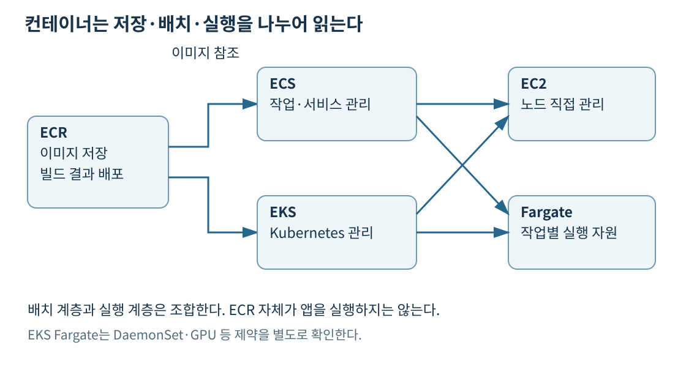
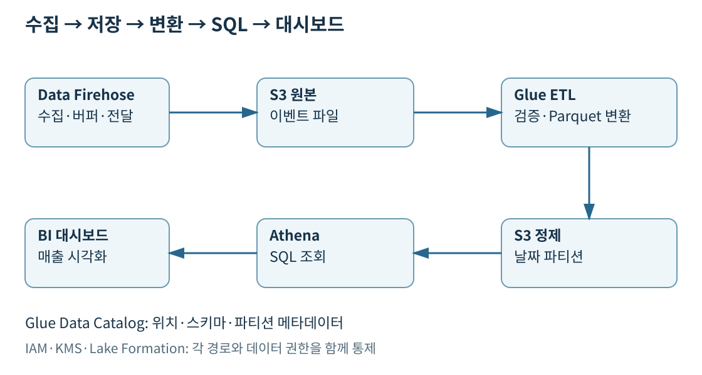
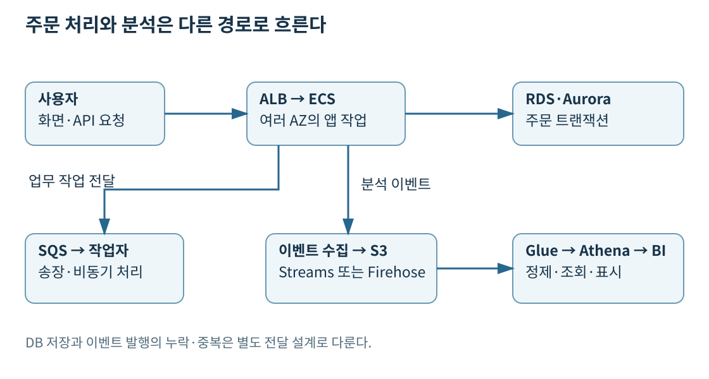

프로젝트 홈 · 13일 차 · 서비스별 보충 설명 · 30일 계획
컨테이너는 애플리케이션 코드와 실행에 필요한 라이브러리를 이미지로 묶어 실행하는 방식이다. 이미지가 같아도 CPU 아키텍처·외부 설정·네트워크·권한·저장소가 맞지 않으면 실행되지 않는다. 컨테이너 이미지를 만들었다고 상태가 자동으로 외부에 보관되거나 여러 AZ에 배치되는 것은 아니다.
컨테이너 환경에는 이미지 저장소, 실행·배치를 조율하는 계층, 실제 CPU·메모리를 제공하는 계층이 있다. ECR은 이미지 저장소, ECS·EKS는 오케스트레이션, Fargate·EC2는 실행 자원으로 읽는다. 이 세 층을 구별하면 “ECR과 Fargate 중 무엇을 선택할까”처럼 서로 다른 역할을 대안으로 비교하는 실수를 줄일 수 있다.

Amazon ECR은 컨테이너 이미지를 저장·배포하는 관리형 레지스트리다. 빌드 시스템이 이미지를 올리고 실행 환경이 내려받는다. 저장소 접근 정책, 이미지 스캔, 수명 주기를 통해 접근·취약점·오래된 이미지 보관을 관리한다. 스캔 통과가 애플리케이션 보안 전체를 보장하지는 않으며 이미지 변경 뒤 재배포도 필요하다.
Amazon ECS는 AWS의 컨테이너 오케스트레이터다. Task definition에 이미지·CPU·메모리·포트·로그·역할 등을 정의한다. Task는 그 정의로 실행한 작업이고, Service는 원하는 작업 개수를 유지하며 교체·배포와 로드 밸런서 연계를 관리한다. 작업 한 개를 직접 시작하는 것과 서비스로 계속 유지하는 것은 다르다.
Amazon EKS는 Kubernetes 제어 영역을 관리하는 서비스다. 기존 Kubernetes API·배포 도구·운영 경험을 활용해야 하는 경우 검토한다. 관리형 제어 영역을 사용해도 앱의 배포 정의, 권한, 네트워크 정책, 애드온과 선택한 실행 방식의 책임은 남는다. ECS를 선택하면 Kubernetes를 운영할 필요는 없고 AWS 통합 방식에 맞추어 컨테이너를 운영한다.
Fargate는 ECS 작업이나 지원되는 EKS Pod를 실행할 CPU·메모리를 제공하며 고객이 호스트 EC2를 직접 배치·패치하는 부담을 줄인다. Fargate가 ECS를 대체하는 것이 아니라 ECS와 함께 사용할 수 있다. EKS와 조합해도 Kubernetes의 모든 기능·노드 수준 접근이 동일하게 제공되는 것은 아니다.
| 비교 | EC2에 컨테이너 실행 | Fargate에 실행 |
|---|---|---|
| 호스트 관리 | 노드 이미지·패치·확장·용량 배치 관리 | 호스트 인프라 관리 부담 감소 |
| 세부 제어 | 인스턴스 유형·GPU·호스트 기능 선택 폭 | 지원 CPU·메모리 조합·플랫폼 제약 확인 |
| 과금 판단 | 인스턴스 비용과 빈 용량 포함 | 요청한 자원과 실행 시간 등 적용 요금 |
| 적합한 조건 | 특수 장치, 높은 지속 활용률, 노드 제어 필요 | 호스트 운영 최소화, 작업별 자원 격리·가변 부하 |
“서버리스이므로 항상 저렴하다”는 결론은 성립하지 않는다. 24시간 일정한 작업이 EC2를 빽빽하게 사용한다면 인스턴스 기반 구성이 유리할 수 있다. 반면 짧게 실행되는 작업의 수가 크게 바뀌면 빈 노드를 유지하는 비용과 운영 부담을 함께 고려해 Fargate를 선택할 수 있다. CPU를 많이 요청하고 실제로 쓰지 않으면 낭비가 된다. 부하를 측정해 CPU·메모리와 확장 목표를 정한다.
EKS에는 클러스터 요금이 있고 EC2·Fargate 등 실행 자원 요금은 별도다. Fargate의 요금만 비교하면서 EKS 제어 영역 비용과 로드 밸런서·로그·스토리지·네트워크 비용을 빼면 총비용이 왜곡된다. EC2의 구매 옵션과 Compute Savings Plans는 2일 차의 적용 범위와 사용량 조건으로 비교한다.
EKS Fargate는 DaemonSet, 특권 컨테이너, GPU 같은 요구를 그대로 충족하지 못한다. 호스트에 에이전트를 반드시 배치해야 하는 시스템이라면 지원 여부부터 확인한다. 서비스를 선택하기 전에 필요한 기능을 적고 ECS·EKS와 EC2·Fargate 조합에서 실제 지원되는지 대조한다.
출처: EKS Fargate 제약, EKS 요금, Fargate 요금
기존 서버가 로컬 디스크에 업로드 파일과 로그인 세션을 저장한다면 이미지만 만들어 3개 작업으로 늘릴 수 없다. 요청이 다른 작업으로 가면 파일이나 세션이 보이지 않을 수 있다. 업로드는 S3, 관계형 주문 데이터는 RDS, 공유 세션은 요구에 맞는 외부 저장소로 이동한다. 로그도 컨테이너 파일에만 남기지 않고 CloudWatch Logs 등으로 전달한다.
ALB는 여러 AZ의 서비스 작업으로 HTTP 요청을 분산한다. ECS Service는 비정상 작업을 교체하고 필요 작업 수를 확장한다. ALB가 작업을 늘리지는 않으며 작업 수 증가가 DB 쓰기 용량을 자동 확장하지도 않는다. 시작 시간·헬스 체크·배포 시 추가 용량과 DB 연결 수를 고려한다. 일시 트래픽은 캐시·큐로 완화할 수 있다.
역할도 분리한다. Task execution role은 ECS/Fargate 에이전트가 ECR 이미지 가져오기, 로그 전송, 작업 시작 시 비밀값 조회 같은 작업에 사용한다. Task role은 컨테이너 안의 앱 코드가 S3나 DynamoDB API를 호출할 때 사용한다. 앱의 S3 권한을 execution role에만 넣어 놓고 SDK 호출이 허용될 것으로 기대하면 안 된다. DB 자격 증명은 이미지에 넣지 않고 Secrets Manager 등에서 전달한다.
출처: Task IAM role, Task execution role, ECS 로드 밸런싱
Fargate 이미지 pull·로그·시작 시 비밀 주입은 execution role, 앱 SDK의 S3 접근은 task role, 배포 API 호출과 역할 전달은 운영자 권한이다. Fargate에는 고객 EC2 instance profile이 없으므로 호스트 역할 수정으로 해결할 수 없다. EC2 시작 유형의 에이전트 역할은 호스트용으로 따로 확인한다. 네트워크의 ECR·S3·로그 접근도 열려 있어야 이미지가 시작된다. 작업 종료 때 사라져도 되는 파일은 임시 저장소에, 여러 AZ에서 동시에 읽고 쓰는 POSIX 파일은 지원 EFS 구성에 맞춘다. EKS Fargate의 EBS·EFS 지원을 ECS와 똑같이 가정하지 않는다.
AWS Batch는 많은 배치 작업을 큐에 넣고 필요한 실행 자원을 마련해 스케줄링한다. 영상 10만 개를 변환할 때 작업별 자원 요구·의존 관계·재시도를 정의하고 EC2·Fargate 등 지원 컴퓨팅 환경에서 처리한다. 작업을 큐에서 읽는 일반 웹 서버와 목적이 다르다. 중간 결과를 외부에 저장하고 재시도를 안전하게 설계하면 Spot을 사용할 수 있다. GPU나 특정 런타임 기능이 필요하면 해당 컴퓨팅 환경 지원 여부를 확인한다.
Elastic Beanstalk는 앱 코드를 배포하면 지원 플랫폼에서 EC2·로드 밸런서·Auto Scaling 등을 구성하고 애플리케이션 환경의 배포·상태 관리를 돕는다. 앱 개발에 집중하면서 익숙한 웹 런타임을 관리형 배포 환경으로 운영하려는 경우다. 하위 리소스 요금과 앱 데이터·보안 설정 책임은 남는다. Fargate처럼 호스트 실행 방식을 뜻하는 이름이 아니다.
| 이름 | 운영 범위 | Fargate와 구별할 점 |
|---|---|---|
| ECS Anywhere | 외부 서버를 ECS에 등록해 컨테이너 운영 | 외부 서버·OS·연결은 고객이 운영 |
| EKS Anywhere | 온프레미스 등의 Kubernetes 클러스터 배포·관리 도구 | AWS 리전의 EKS 제어 영역을 그대로 제공하는 상품과 구별 |
| EKS Distro | EKS 기반 기술과 관련된 Kubernetes 배포판 | 배포판 자체가 관리형 운영 서비스는 아님 |
기존 앱을 수정할 수 없다면 무조건 컨테이너로 바꾸는 것부터 시작하지 않는다. VM 재호스트와 다중 AZ 배치, 외부 저장소·복구 절차, 지원 가능한 로드 밸런싱으로 가용성을 높일 수 있다. 세션과 로컬 파일에 강하게 묶인 앱은 인스턴스를 복제하는 것만으로 안전하게 확장되지 않는다. 앱 변경 허용 범위와 상태 위치를 먼저 확인한다.
출처: AWS Batch, Elastic Beanstalk, ECS Anywhere, EKS Anywhere, EKS Distro
Array job은 같은 작업 정의를 여러 인덱스로 실행한다. 시료별 A 전처리 뒤 B 분석이 필요하면 같은 크기의 두 array와 N_TO_N 의존성으로 B[i]가 A[i]의 성공만 기다리게 한다. A 전체 완료를 기다리면 느린 시료가 다른 B도 막고, SEQUENTIAL은 독립 시료를 직렬화할 수 있다. 개별 job ID 수천 개를 직접 매핑하는 방법보다 array 관계가 제출·추적 코드를 줄인다. Beanstalk의 지속 웹 환경 관리와 이러한 유한 작업 스케줄링은 역할이 다르다.
데이터 레이크는 원본과 가공 데이터를 다양한 형식으로 모아 여러 분석 도구가 이용하는 구조다. S3가 저장 계층일 수 있지만, 버킷을 만들었다고 데이터의 의미·품질·권한·스키마가 정리되는 것은 아니다. 원본 영역과 정제 영역을 구분하고 데이터 소유자, 날짜·제품 등의 파티션, 보존 기간을 정한다.
Glue Data Catalog는 테이블의 열·자료형·S3 위치·파티션 같은 메타데이터를 관리한다. Catalog에 테이블이 생겨도 원본 데이터가 Catalog 안으로 옮겨지는 것은 아니다. Crawler는 데이터 형식을 살펴 스키마를 추론할 수 있지만 업무 의미와 잘못된 값까지 자동 확정하지 못한다. 잘못된 타입 추론이나 새 파티션 누락을 검증한다.
Glue ETL은 데이터를 추출·변환·적재하는 작업이다. JSON 주문 이벤트를 정리해 Parquet로 바꾸고, 중복·잘못된 레코드를 분리해 정제 영역에 쓸 수 있다. Catalog는 데이터를 설명하고 ETL은 데이터를 처리한다. 같은 Glue 이름 아래 있어도 역할은 다르다.
Athena는 S3 등의 데이터에 SQL 분석을 수행하는 관리형 쿼리 서비스다. 미리 DB 서버를 유지하지 않고 로그를 가끔 조사하는 요구에 적합하다. SQL을 쓴다고 주문 한 건씩 갱신하는 관계형 운영 DB와 같은 역할은 아니다. 쿼리 결과 저장 위치와 접근 권한도 구성해야 한다.

출처: Glue, Data Catalog, Athena
S3 경로를 orders/year=2026/month=11/day=02/처럼 나누면 날짜 조건에 맞는 파티션만 읽도록 구성할 수 있다. Parquet는 열 단위 형식이므로 분석에 필요한 열만 읽는 데 유리하고 압축도 스캔 양을 줄이는 데 도움이 된다. 파티션을 나눴어도 조건 없이 전체 기간을 조회하면 비용이 커질 수 있다. 작은 파일이 너무 많으면 파일 탐색·요청 오버헤드가 커지므로 적절한 파일 크기로 정리한다.
예를 들어 1년치 CSV 12TB에서 하루의 주문 금액만 계산한다. 아무 최적화 없이 전체 파일을 읽는 방식보다 날짜 파티션을 제한하고 Parquet의 필요한 열만 읽는 방식이 스캔 양을 줄일 수 있다. 줄어드는 비율은 실제 분포·압축·열 선택에 달렸으므로 임의의 고정 할인율을 제시하지 않는다. Athena의 스캔 기반 요금에서는 스캔 바이트를, 용량 기반 방식에서는 예약 용량과 사용을 확인한다.
출처: Athena 데이터 최적화, Athena 요금
IAM은 API 호출·S3·KMS·쿼리 실행 등의 권한을 통제한다. Lake Formation은 데이터 레이크의 테이블·열·행 등에 대한 세밀한 접근을 중앙 관리한다. Lake Formation이 IAM을 모두 대체하는 것은 아니다. 사용자는 쿼리 API 권한, Catalog 접근, 설정 방식에 맞는 Lake Formation grant, 쿼리 결과 버킷과 KMS 권한 등 필요한 경로를 모두 충족해야 한다.
분석가는 주문 금액과 지역은 보되 고객 전화번호는 보지 못하게 만들 수 있다. 이때 데이터 원본 S3 경로를 직접 읽을 수 있는 별도 권한을 넓게 열어 놓으면 분석 도구에서 제한한 의도를 우회할 수 있다. 민감 데이터 권한·직접 접근·결과 파일 권한을 함께 확인한다. 전송은 TLS, 저장은 요구에 맞는 암호화를 사용하고 프라이빗 수집은 지원 서비스의 VPC 엔드포인트를 검토한다. 엔드포인트는 네트워크 경로이지 데이터 권한 부여 수단은 아니다.
출처: Lake Formation, Athena 접근 제어
날짜 WHERE는 읽을 경로를, Parquet는 읽을 열·블록을 줄인다. gzip CSV는 압축만 할 뿐 열 형식이 되지 않는다. 규칙적이고 조밀한 날짜·시간 경로는 partition projection으로 위치를 계산해 새 파티션 등록 대기를 없앨 수 있다. 실제 존재하는 조합이 드문 테이블은 빈 경로 계산이 많아져 등록 파티션과 Glue index가 더 적합할 수 있다. index는 등록된 메타데이터 탐색을 줄이고 첫 키 조건·지원 AND/범위 조건·ACTIVE 상태·partition_filtering.enabled=true가 필요하다. index는 새 경로 등록을 대신하지 않는다.
같은 확정 데이터의 같은 SQL이고 1시간 전 결과도 허용하면 결과 재사용의 최대 나이를 설정할 수 있다. workgroup·쿼리·결과 설정·권한·지원 제한을 확인한다. 잘못된 대량 쿼리를 실행 중 취소하려면 per-query scan limit을 쓰며 누적 임계값 알림·Budgets와 구별한다. 이미 스캔한 바이트 비용은 남을 수 있다. Lake Formation의 열 제한뿐 아니라 원본 S3 직접 읽기와 결과 버킷·KMS 권한도 통제해야 전화번호 우회를 막는다.
메타데이터·열 스캔 비교, 레이크 권한·결과 신선도·스캔 제한
스트림은 계속 들어오는 이벤트의 흐름이다. 수신한 레코드를 여러 소비자가 자신의 위치부터 읽을 수 있어야 하는지, 정해진 저장소에 전달만 하면 되는지, 하나의 작업을 분담 처리할 것인지에 따라 서비스를 고른다.
| 서비스 | 주된 역할 | 사용자 구현·운영에서 남는 일 |
|---|---|---|
| Kinesis Data Streams | 보존 기간 동안 이벤트를 저장하고 소비자가 반복 읽기 | 파티션 키·순서 범위·소비자 처리·중복 대응 |
| Amazon Data Firehose | 데이터를 버퍼링해 지원 대상에 관리형 전달 | 목적지·버퍼·변환·오류 데이터 경로 구성 |
| Amazon MSK | Apache Kafka 기반 스트리밍 플랫폼 | 토픽·파티션·소비자·Kafka 호환 요구·용량 계획 |
| SQS | 작업 메시지를 큐에 보관하고 소비자가 분담 | 멱등성·재시도·가시성 시간·DLQ |
Kinesis Data Streams에서 파티션 키는 관련 레코드를 같은 샤드로 보내는 데 사용된다. 샤드 내 순서와 전체 스트림의 전역 순서는 다르다. 같은 인기 키에 부하가 몰리면 전체 용량만 늘려도 문제가 해소되지 않을 수 있다. 소비자가 체크포인트 이후부터 다시 읽으면 중복 처리가 생길 수 있으므로 주문 반영 같은 작업은 이벤트 ID로 중복을 막는다. 보존 기간이 지나면 무한히 재생할 수 없다.
Data Streams는 요청량 변화에 맞춘 on-demand와 샤드를 계획·조정하는 provisioned 용량 방식을 비교한다. 프로비저닝에서는 쓰기와 읽기의 필요 처리량을 각각 보고 샤드 수를 정하며, on-demand도 파티션 키 편중이나 소비자 코드의 느린 처리를 자동으로 없애지는 않는다. 소비 지연이 보존 기간에 가까워지면 아직 읽지 않은 데이터를 잃을 수 있다. 생산자 제한 오류·소비 지연을 관찰하고 재시도·배치·소비자 확장과 보존 기간을 함께 조정한다. 입력이 계속 소비 속도를 넘는 상태에서는 재시도만 반복하지 말고 병목을 풀거나 수집량을 제어한다.
Data Firehose의 예전 이름은 Kinesis Data Firehose다. 직접 전송받거나 지원 소스에서 읽어 S3 등으로 전달하며, 버퍼·변환·목적지와 오류 처리 조건에 따라 전달 지연이 달라진다. 모든 구성에서 고정된 수초 이내 전달을 보장한다고 외우지 않는다. 전달 실패 데이터를 별도 S3 경로에 보관하면 재처리에 도움이 된다. Data Streams처럼 임의의 소비자들이 각자 읽기 위치를 관리하는 범용 재생 저장소로 해석하지 않는다.
Kafka 프로토콜과 기존 생산자·소비자 코드를 유지해야 하면 MSK를 검토한다. 기존 Kafka 사용 여부가 없고 AWS 관리형 스트림만 필요하다면 Data Streams와 비교한다. 택배 라벨 한 건을 여러 작업자 중 하나가 만들어야 하는 것은 SQS 작업 큐가 자연스럽고, 같은 클릭 이벤트를 실시간 탐지와 통계가 각자 읽어야 하는 것은 스트림의 독립 소비에 가깝다.
출처: Data Streams, 샤드·파티션 키, Data Firehose, MSK, SQS
Kinesis Video Streams는 카메라 등의 시간 정보가 있는 영상 스트림을 안전하게 수집·저장·재생하는 목적이다. 주문 이벤트 JSON을 보내는 Data Streams와 다르다. 영상 내용을 인식하는 모델이 필요하면 Rekognition 같은 별도 분석 기능과 지원 연계를 검토한다. 스트리밍 SQL·상태 기반 처리에는 Amazon Managed Service for Apache Flink가 있으며, 단순 목적지 전달과 윈도 집계·상태 관리의 요구를 구분한다.
출처: Kinesis Video Streams, Managed Service for Apache Flink
인기 partition key 하나의 쓰기 집중은 shard를 늘리는 것만으로 고르게 나뉘지 않는다. 반면 소비자 둘이 각각 shard당 1.5MB/s를 읽으면 공유 GetRecords의 shard당 2MB/s를 합계 3MB/s가 초과한다. EFO는 등록 소비자마다 전용 최대 2MB/s와 push 읽기를 제공해 독립 읽기를 늘리며 쓰기 hot key는 해결하지 않는다.
KCL은 lease로 처리 담당자를, checkpoint로 재시작 위치를 관리한다. 처리 후 checkpoint 전에 장애면 같은 이벤트가 다시 처리될 수 있어 업무 쓰기를 멱등하게 만든다. 48시간 중단은 중단 전에 보존 기간을 그 시간과 따라잡기 여유보다 길게 늘리고 기존 checkpoint로 재개한다. LATEST는 밀린 데이터를 건너뛰고, 보존 밖으로 삭제된 레코드는 나중에 기간을 늘려도 돌아오지 않는다. Firehose의 버퍼 전달은 이 독립 소비·재생 요구와 다르다.
쓰기·읽기·재개 병목, Firehose·MSK·AppFlow 입출력
EMR은 Spark·Hadoop 같은 프레임워크로 대규모 분산 처리를 수행하는 관리형 플랫폼이다. 클러스터 기반 운영, EKS 연계, EMR Serverless 등 실행 선택지가 있으며 “EMR은 항상 직접 EC2를 24시간 운영한다”로 제한하지 않는다. 프레임워크·라이브러리·실행 환경 제어가 필요한 대규모 분석을 검토한다. Glue는 관리형 데이터 통합·ETL에, Athena는 SQL로 데이터를 조회하는 요구에 초점을 맞춰 비교한다.
| 데이터·조회 요구 | 검토 서비스 | 구별할 이유 |
|---|---|---|
| 주문 생성·수정, 트랜잭션과 관계형 제약 | RDS·Aurora | 운영 업무의 일관성과 짧은 개별 처리 |
| 여러 해의 매출·상품·고객을 반복 집계·조인 | Redshift | 열 기반 데이터 웨어하우스·분석 워크로드 |
| S3 로그를 비정기적으로 SQL 조회 | Athena | 별도 웨어하우스 적재 없이 데이터 조회 |
| 로그·문서 전문 검색과 필터·탐색 | OpenSearch Service | 검색 인덱스 중심의 조회 |
| 시간별 센서 값과 시간 구간 집계 | 시계열 DB | 시간 축·보존·집계 패턴 중심, 현행 제공 상태 확인 |
Redshift는 대규모 분석에서 필요한 열을 읽고 분산 처리하는 데이터 웨어하우스다. 운영 DB를 그대로 대체해 모든 주문 결제를 처리하는 용도로 고르지 않는다. Provisioned와 Serverless의 용량·요금 차이를 확인하고, S3를 조회하는 Spectrum도 별도 역할로 이해한다. OpenSearch는 로그 검색·관측과 문서 검색에 유용하지만 S3처럼 저렴한 장기 원본 보관소나 관계형 거래 DB로 취급하지 않는다.
BI는 분석 결과를 사람이 볼 수 있는 대시보드로 전달한다. 현재 공식 범위 목록은 Amazon Quick을 사용한다. 과거 자료의 Amazon QuickSight는 현재 Amazon Quick의 BI 기능 Amazon Quick Sight와 연결해 읽는다. BI 도구는 Athena·Redshift 등의 데이터에 연결해 시각화하며 데이터 수집·원본 저장·ETL을 모두 대신하지 않는다. 대시보드 새로 고침 주기와 캐시·추출 데이터 때문에 원본보다 늦게 보일 수 있다.
출처: EMR, EMR Serverless, Redshift, 열 기반 저장, OpenSearch, Amazon Quick
KEY는 같은 값의 행을 같은 slice에 두어 조인 이동을 줄이지만 한 고객이 절반이면 그 slice에 부하가 몰린다. 작은 dimension은 ALL로 각 노드에 복제하고 큰 fact는 EVEN으로 고르게 나누는 구성을 이 조건에서 비교한다. 큰 fact까지 ALL이면 저장·적재 부담이 크고 두 표 모두 EVEN이면 조인 이동이 남는다. 기본 AUTO도 측정과 함께 비교한다.
반복되는 SUM/JOIN을 materialized view에 저장하고 적재 후 refresh하면 서로 다른 필터가 공통 집계를 재사용한다. 일반 view는 SQL 정의만, 결과 캐시는 유효한 동일 쿼리의 결과를 재사용한다. WLM 우선순위는 계산량을 없애지 않는다. 새로 고침 비용·저장·신선도를 함께 정한다.
Direct query는 화면 조회 시 원본을 읽으므로 신선도 요구와 원본 지연·동시 부하를 함께 본다. SPICE는 미리 가져온 데이터를 반복 조회해 원본 부하를 줄이지만 마지막 성공 갱신 이후 변경은 보이지 않는다. 최근 주문 운영 화면과 전날 확정 매출 화면은 허용 데이터 나이가 다르므로 같은 방식을 강제하지 않는다. 갱신 실패를 새 데이터로 오해하지 않도록 성공 시각·업무 데이터 시각·실패 알림과 원본 권한·BI 행 권한을 함께 설계한다.
센서의 최근 고빈도 원본과 수년치 집계를 같은 비싼 조회 계층에 계속 두는 대신, 최근 장치·시간 범위 조회와 S3 Parquet 장기 집계를 분리해 비교한다. 평균으로 줄이면 짧은 최고값을 잃을 수 있고, 늦게 도착한 측정값은 발생 시각으로 재계산해야 한다. 보존 기간·재처리 창·조회 신선도와 수집·저장·스캔 비용을 함께 정한다.
Direct query·SPICE와 매출 화면의 신선도, 센서 원본·집계·지연 데이터의 비용
이미 학습된 기능을 API로 호출하는 것과 직접 모델을 학습·배포하는 것은 다르다. 표준 기능이 요구를 충족하면 목적별 서비스를 사용해 모델 운영 부담을 줄일 수 있다. 언어·리전·파일 형식·처리량·품질 한계를 확인하고 결과가 잘못될 때 사람이 검토할 경로를 둔다.
| 서비스 | 입력 → 결과 | 실제 사용 예와 제약 |
|---|---|---|
| Comprehend | 텍스트 → 개체·감정·핵심 구절 등 | 상담 문서 분류·분석, 지원 언어와 모델 기능 확인 |
| Lex | 음성·텍스트 → 대화 의도와 슬롯 | 예약 챗봇, 실제 예약·결제 처리는 백엔드 필요 |
| Polly | 텍스트 → 음성 | 안내문 음성 생성, 음성 인식 기능과 구별 |
| Rekognition | 이미지·영상 → 객체·얼굴·콘텐츠 분석 | 부적절한 이미지 탐지 보조, 오탐·정책 검토 필요 |
| Textract | 문서 이미지 → 텍스트·표·양식 정보 | 송장 표 추출, 업무 값 검증·예외 처리 필요 |
| Transcribe | 음성 → 텍스트 | 상담 녹취 전사, 화자·잡음·지원 언어에 따른 품질 확인 |
| Translate | 텍스트 → 다른 언어 텍스트 | 다국어 안내, 도메인 용어·중요 문장 검수 |
| SageMaker AI | 학습 데이터·코드 → 학습·배포한 모델 | 자체 수요 예측, 데이터 준비·평가·운영 책임 필요 |
출처: Comprehend, Lex, Polly, Rekognition, Textract, Transcribe, Translate, SageMaker AI
예를 들어 고객이 올린 송장을 S3에 저장하고 Textract로 표를 추출한 뒤 주문 DB와 대조할 수 있다. Textract가 문자를 읽었다고 결제 금액과 거래처가 올바르다는 뜻은 아니다. 합계와 거래처 ID를 검증하고 신뢰도가 낮거나 형식이 다른 문서는 검토 대상으로 보낸다. 업무 결정을 API 결과에 바로 연결하기 전에 오류의 영향을 설계한다.
자체 판매량 모델이 필요하면 SageMaker AI에서 학습·평가·호스팅을 구성할 수 있다. 목적별 API와 달리 고객이 정한 목표·학습 데이터·평가 방법이 핵심이다. 과거 데이터를 그대로 복사해 학습하면 미래 정보를 학습에 섞는 누수나 편향이 생길 수 있고, 모델을 배포한 뒤에도 품질과 비용을 관찰해야 한다. 데이터 위치·접근 권한·민감 정보 처리는 AI라는 이유로 생략하지 않는다.
음성→텍스트는 Transcribe, 텍스트→다른 언어는 Translate, 텍스트→음성은 Polly다. 송장 이미지→표·양식은 Textract이며 그 결과를 Comprehend로 문장 분석할 수 있다. Lex의 intent/slot 출력은 실제 예약 완료가 아니므로 백엔드 처리가 필요하다. confidence가 높아도 업무 금액 검증을 생략하지 않는다. SageMaker의 학습 job과 상시 추론 endpoint는 별도 실행·비용이며 간헐적인 대량 예측은 batch 방식도 비교한다.
| 서비스 | 해결하는 요구 | 다른 서비스와의 경계 |
|---|---|---|
| AWS Amplify | 웹 앱·프런트엔드 배포와 관련 개발 지원 | ECS 같은 범용 컨테이너 배치와 구별 |
| AWS Device Farm | 실제 모바일 장치·지원 브라우저에서 앱 테스트 | 운영 사용자에게 앱을 호스팅하지 않음 |
| Serverless Application Repository | 서버리스 앱·템플릿 검색·재사용 | 배포 후 실제 자원 권한·비용 검토 필요 |
| AWS Data Exchange | 제공자의 데이터 상품 구독·이용 | 회사 내부 ETL 엔진과 구별, 사용 계약 확인 |
| Amazon AppFlow | 지원 SaaS와 AWS 사이의 데이터 흐름 | 범용 DB CDC·서버 복제 도구와 구별 |
| AWS Data Pipeline | 일정·의존 관계에 따른 데이터 작업 조율 | 유지보수 모드, 신규 설계는 현행 대안 비교 |
Data Pipeline은 2024년 7월 25일부터 신규 고객 접수를 중단했고, 신규 기능과 리전 확장이 계획되지 않은 유지보수 모드다. 기존 환경의 동작과 이관 관점에서 이해한다. 예전 자료에서 소개됐다는 이유만으로 새 ETL의 기본 선택으로 고르지 않고 Glue·Step Functions·지원되는 관리형 도구와 비교한다. AppFlow도 모든 SaaS의 모든 객체·양방향 실시간 동기화를 보장하지 않으므로 커넥터·지원 작업·실행 주기를 확인한다.
출처: Amplify Hosting, Device Farm, Serverless Application Repository, Data Exchange, AppFlow, Data Pipeline, Data Pipeline 제공 상태

쇼핑몰이 주문 API, 송장 처리, 하루 매출 분석을 운영한다고 하자. 사용자의 정적 화면은 S3·CloudFront 또는 Amplify Hosting에서 전달하고 API 요청은 ALB 뒤 여러 AZ의 ECS 서비스가 받는다. Kubernetes 호환 요구가 없고 호스트 운영을 줄이려면 ECS와 Fargate를 후보로 삼는다. GPU나 특권 실행이 필요하면 해당 작업은 지원되는 EC2 실행 환경으로 분리한다.
결제·주문 확정은 RDS·Aurora의 트랜잭션에서 처리한다. 긴 송장 생성은 SQS로 넘겨 작업자가 비동기로 처리하고, 실패는 재시도·DLQ로 보낸다. API 응답과 송장 완료를 같은 순간으로 가정하지 않는다. DB 기록과 이벤트 발행 사이 실패로 누락이 생기지 않도록 트랜잭셔널 아웃박스 같은 전달 설계를 검토하고 이벤트 ID로 중복을 막는다. 큐를 추가했다고 정확히 한 번의 업무 처리가 저절로 완성되는 것은 아니다.
운영 이벤트를 실시간 이상 탐지와 통계가 독립적으로 읽어야 하면 Data Streams를 사용한다. 단순히 S3에 저장하기만 하면 Firehose로 직접 보내는 구성이 더 작을 수 있다. Kafka 생태계 유지가 필수일 때는 MSK를 검토한다. 수신·재시도·보존 시간과 소비 지연을 관찰하고, 적재 지연을 사용자 주문 실패와 구별한다.
S3 원본은 제한된 역할만 쓰도록 하고, Glue가 검증·중복 제거·파티션·Parquet 변환을 수행해 정제 영역에 저장한다. 잘못된 레코드는 버리지 않고 분리해 재처리한다. Catalog에 스키마와 파티션을 등록하고 Athena로 하루 매출을 조회한다. 분석가에게 전화번호 접근을 막고 결과 버킷도 같은 의도로 보호한다. 여러 해의 복잡한 분석을 반복하고 동시 사용자가 많아지면 Redshift 적재·모델링 비용과 Athena 스캔·성능을 비교한다.
BI 대시보드는 승인된 집계 결과를 표시한다. 송장 문서의 정보 추출에는 Textract, 음성 상담 전사에는 Transcribe처럼 실제 입출력에 맞는 기능을 붙인다. 모델 개발이 필요한 자체 예측만 SageMaker AI로 분리한다. 서비스 이름의 수를 늘리는 것이 아니라 요구되는 처리 경로마다 필요한 역할을 배치한다.
비용은 Fargate 요청 자원·실행 시간, ALB, DB, 큐·스트림, Firehose, S3 저장·요청, Glue 실행, Athena 스캔, BI 사용자·용량, 로그·NAT·전송을 합산한다. 읽지 않는 원본은 보존 규정에 맞춰 수명 주기를 적용하고, 매 쿼리마다 1년치를 스캔하지 않도록 날짜 조건을 둔다. 운영 데이터는 13일 차의 백업·복구 목표를 적용하고, 분석 데이터는 원본에서 다시 만들 수 있는 범위와 복구 시간을 따로 정한다.
이 구조를 설명할 때 사용자 요청, 데이터 저장, 비동기 작업, 분석의 화살표를 구별한다. IAM은 API 권한, 보안 그룹은 네트워크 통신, KMS는 암호화 키 사용, Lake Formation은 데이터 권한을 담당한다. 여러 AZ·오토스케일링·복제·백업은 각각 다른 장애와 부하에 대응한다. 공식 범위의 나머지 서비스별 용도·제약은 서비스별 보충 설명에서 비교한다.
출처: 트랜잭셔널 아웃박스 패턴, SAA-C03 범위와 설계 과제
공식 자료 확인일: 2026-11-02